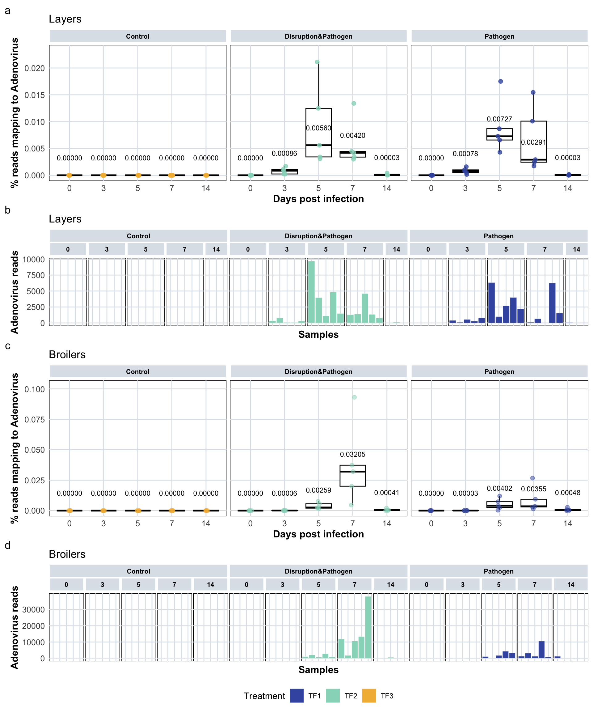

6 Adenovirus Presence Analysis
6.2 Adenovirus Percentage Over Time
This section visualizes the percentage of sequencing reads mapping to adenovirus genomes across different time points (days post infection) for both broiler and layer breeds.
6.2.1 Broilers - Adenovirus Percentage
# Calculate summary statistics (median, IQR) for adenovirus percentage by treatment and age
var <- "adenovirus_percentage"
summary_stats_broiler <- plot_data_stats_macro %>%
filter(treatment != "TF0") %>% # Exclude negative controls
filter(animal_breed == "broiler") %>%
group_by(treatment_expl, age) %>%
summarise(
median = median(.data[[var]], na.rm = TRUE),
IQR = IQR(.data[[var]], na.rm = TRUE),
Q1 = quantile(.data[[var]], 0.25, na.rm = TRUE),
Q3 = quantile(.data[[var]], 0.75, na.rm = TRUE),
.groups = "drop"
) %>%
mutate(label_txt = formatC(median, format = "f", digits = 5))
# Display summary statistics table with proper formatting
knitr::kable(summary_stats_broiler, digits = 5, caption = "Summary statistics (median and IQR) for adenovirus percentage in broilers by treatment and age")| treatment_expl | age | median | IQR | Q1 | Q3 | label_txt |
|---|---|---|---|---|---|---|
| Control | 0 | 0.00000 | 0.00000 | 0.00000 | 0.00000 | 0.00000 |
| Control | 3 | 0.00000 | 0.00000 | 0.00000 | 0.00000 | 0.00000 |
| Control | 5 | 0.00000 | 0.00000 | 0.00000 | 0.00000 | 0.00000 |
| Control | 7 | 0.00000 | 0.00000 | 0.00000 | 0.00000 | 0.00000 |
| Control | 14 | 0.00000 | 0.00000 | 0.00000 | 0.00000 | 0.00000 |
| Disruption&Pathogen | 0 | 0.00000 | 0.00000 | 0.00000 | 0.00000 | 0.00000 |
| Disruption&Pathogen | 3 | 0.00006 | 0.00008 | 0.00002 | 0.00010 | 0.00006 |
| Disruption&Pathogen | 5 | 0.00259 | 0.00357 | 0.00205 | 0.00562 | 0.00259 |
| Disruption&Pathogen | 7 | 0.03205 | 0.01726 | 0.02008 | 0.03734 | 0.03205 |
| Disruption&Pathogen | 14 | 0.00041 | 0.00047 | 0.00006 | 0.00053 | 0.00041 |
| Pathogen | 0 | 0.00000 | 0.00000 | 0.00000 | 0.00000 | 0.00000 |
| Pathogen | 3 | 0.00003 | 0.00004 | 0.00002 | 0.00005 | 0.00003 |
| Pathogen | 5 | 0.00402 | 0.00474 | 0.00257 | 0.00731 | 0.00402 |
| Pathogen | 7 | 0.00355 | 0.00636 | 0.00301 | 0.00938 | 0.00355 |
| Pathogen | 14 | 0.00048 | 0.00057 | 0.00019 | 0.00076 | 0.00048 |
# Create boxplot with jittered points showing adenovirus percentage over time for broilers
boxplot_reads_prc_1_broiler <- plot_data_stats_macro %>%
filter(treatment != "TF0") %>%
filter(animal_breed == "broiler") %>%
ggplot(aes(x = age, y = adenovirus_percentage, color = treatment)) +
geom_boxplot(outlier.shape = NA, color = "black") + # Boxplot without outliers (shown as jitter)
geom_jitter(width = 0.05, alpha = 0.5, size = 2) + # Individual data points
scale_color_manual(values = treatment_colours_bright) +
facet_nested(. ~ treatment_expl, scales = "fixed", space = "fixed", switch = "y") +
labs(x = "Days post infection", y = "% reads mapping to Adenovirus") +
guides(color = "none") + # Remove legend
theme_minimal() +
custom_ggplot_theme +
theme(panel.spacing = unit(0.3, "lines"),
plot.margin = margin(0.2, 0.2, 0.2, 0.2)) +
scale_y_continuous(expand = expansion(mult = c(0.05, 0.15))) +
# Add median values as text labels above boxes
geom_text(
data = summary_stats_broiler,
aes(x = age, y = median, label = label_txt),
inherit.aes = FALSE,
vjust = -3.0,
size = 3, alpha = 1, color = "black"
) +
ggtitle("Broilers")
# Display the plot (commented out - used in combined plot)
# boxplot_reads_prc_1_broiler6.2.2 Layers - Adenovirus Percentage
# Calculate summary statistics (median, IQR) for adenovirus percentage by treatment and age
var <- "adenovirus_percentage"
summary_stats_layer <- plot_data_stats_macro %>%
filter(treatment != "TF0") %>% # Exclude negative controls
filter(animal_breed == "layer") %>%
group_by(treatment_expl, age) %>%
summarise(
median = median(.data[[var]], na.rm = TRUE),
IQR = IQR(.data[[var]], na.rm = TRUE),
Q1 = quantile(.data[[var]], 0.25, na.rm = TRUE),
Q3 = quantile(.data[[var]], 0.75, na.rm = TRUE),
.groups = "drop"
) %>%
mutate(label_txt = formatC(median, format = "f", digits = 5))
# Display summary statistics table with proper formatting
knitr::kable(summary_stats_layer, digits = 5, caption = "Summary statistics (median and IQR) for adenovirus percentage in layers by treatment and age")| treatment_expl | age | median | IQR | Q1 | Q3 | label_txt |
|---|---|---|---|---|---|---|
| Control | 0 | 0.00000 | 0.00000 | 0.00000 | 0.00000 | 0.00000 |
| Control | 3 | 0.00000 | 0.00000 | 0.00000 | 0.00000 | 0.00000 |
| Control | 5 | 0.00000 | 0.00000 | 0.00000 | 0.00000 | 0.00000 |
| Control | 7 | 0.00000 | 0.00000 | 0.00000 | 0.00000 | 0.00000 |
| Control | 14 | 0.00000 | 0.00000 | 0.00000 | 0.00000 | 0.00000 |
| Disruption&Pathogen | 0 | 0.00000 | 0.00000 | 0.00000 | 0.00000 | 0.00000 |
| Disruption&Pathogen | 3 | 0.00086 | 0.00083 | 0.00024 | 0.00108 | 0.00086 |
| Disruption&Pathogen | 5 | 0.00560 | 0.00906 | 0.00342 | 0.01249 | 0.00560 |
| Disruption&Pathogen | 7 | 0.00420 | 0.00106 | 0.00340 | 0.00445 | 0.00420 |
| Disruption&Pathogen | 14 | 0.00003 | 0.00019 | 0.00003 | 0.00022 | 0.00003 |
| Pathogen | 0 | 0.00000 | 0.00000 | 0.00000 | 0.00000 | 0.00000 |
| Pathogen | 3 | 0.00078 | 0.00049 | 0.00052 | 0.00101 | 0.00078 |
| Pathogen | 5 | 0.00727 | 0.00211 | 0.00657 | 0.00868 | 0.00727 |
| Pathogen | 7 | 0.00291 | 0.00765 | 0.00244 | 0.01009 | 0.00291 |
| Pathogen | 14 | 0.00003 | 0.00008 | 0.00002 | 0.00010 | 0.00003 |
# Create boxplot with jittered points showing adenovirus percentage over time for layers
boxplot_reads_prc_1_layer <- plot_data_stats_macro %>%
filter(treatment != "TF0") %>%
filter(animal_breed == "layer") %>%
ggplot(aes(x = age, y = adenovirus_percentage, color = treatment)) +
geom_boxplot(outlier.shape = NA, color = "black") + # Boxplot without outliers (shown as jitter)
geom_jitter(width = 0.05, alpha = 0.8, size = 2) + # Individual data points
scale_color_manual(values = treatment_colours_bright) +
facet_nested(. ~ treatment_expl, scales = "fixed", space = "fixed", switch = "y") +
labs(x = "Days post infection", y = "% reads mapping to Adenovirus") +
guides(color = "none") + # Remove legend
theme_minimal() +
custom_ggplot_theme +
theme(panel.spacing = unit(0.3, "lines"),
plot.margin = margin(0.2, 0.2, 0.2, 0.2)) +
scale_y_continuous(expand = expansion(mult = c(0.05, 0.15))) +
# Add median values as text labels above boxes
geom_text(
data = summary_stats_layer,
aes(x = age, y = median, label = label_txt),
inherit.aes = FALSE,
vjust = -3.0,
size = 3, alpha = 1, color = "black"
) +
ggtitle("Layers")
# Display the plot (commented out - used in combined plot)
# boxplot_reads_prc_1_layer6.3 Adenovirus Read Counts by Sample
This section shows absolute read counts mapping to adenovirus genomes for each individual sample, grouped by breed and treatment.
6.3.1 Layers - Adenovirus Read Counts
# Create barplot showing absolute adenovirus read counts per sample for layers
barplot_layer <- plot_data_stats_macro %>%
filter(treatment != "TF0") %>%
filter(animal_breed == "layer") %>%
ggplot(aes(x = microsample, y = adenovirus_total_mapped, fill = treatment)) +
geom_bar(stat = "identity", colour = "white", linewidth = 0.1) +
scale_fill_manual(values = treatment_colours_bright) +
labs(x = "Samples", y = "Adenovirus reads", fill = "Treatment") +
facet_nested(. ~ treatment_expl + age, scales = "free", space = "free") +
theme_minimal() +
custom_ggplot_theme +
theme(axis.text.x = element_blank(), # Hide sample IDs for clarity
axis.text.y = element_text(),
legend.position = "bottom",
plot.margin = margin(0.2, 0.2, 0.2, 0.2)) +
ggtitle("Layers")
# Display the plot (commented out - used in combined plot)
# barplot_layer6.3.2 Broilers - Adenovirus Read Counts
# Create barplot showing absolute adenovirus read counts per sample for broilers
barplot_broiler <- plot_data_stats_macro %>%
filter(treatment != "TF0") %>%
filter(animal_breed == "broiler") %>%
ggplot(aes(x = microsample, y = adenovirus_total_mapped, fill = treatment)) +
geom_bar(stat = "identity", colour = "white", linewidth = 0.1) +
scale_fill_manual(values = treatment_colours_bright) +
labs(x = "Samples", y = "Adenovirus reads", fill = "Treatment") +
facet_nested(. ~ treatment_expl + age, scales = "free", space = "free") +
theme_minimal() +
custom_ggplot_theme +
theme(axis.text.x = element_blank(), # Hide sample IDs for clarity
axis.text.y = element_text(),
legend.position = "bottom",
plot.margin = margin(0.2, 0.2, 0.2, 0.2)) +
ggtitle("Broilers")
# Display the plot (commented out - used in combined plot)
# barplot_broiler6.3.3 Combined Visualization
# Combine all four plots (percentage and read counts for both breeds) in a single figure
# Using patchwork to arrange plots vertically with appropriate heights
(boxplot_reads_prc_1_layer + barplot_layer +
boxplot_reads_prc_1_broiler + barplot_broiler) +
plot_layout(
ncol = 1, # Single column layout
heights = c(2, 1, 2, 1), # Relative heights: percentage plots taller than barplots
guides = "collect" # Collect legends into one
) +
plot_annotation(tag_levels = 'a') & # Add panel labels (a, b, c, d)
theme(legend.position = "bottom", legend.box = "vertical")